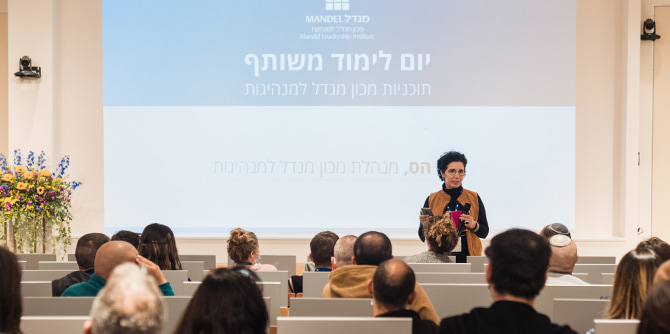
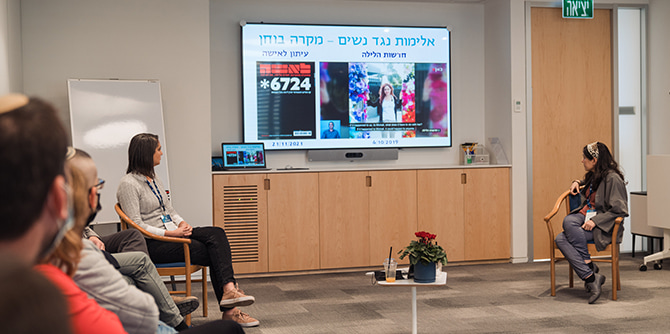

יום הלימוד המשותף במכון מנדל למנהיגות הוא המפגש הרשמי הראשון של עמיתי תוכניות המנהיגות השונות עם עמיתי התוכניות האחרות: זו הזדמנות משמעותית להיכרות, למפגש ולשיח, ומטרתו לחשוף את העמיתים לתכנים ולמרחבי ההשפעה שבהם המכון מבקש לפעול. להיכרות בין העמיתים יש אפוא חשיבות רבה ביום הלימוד המשותף – וזאת על-פי תפיסת המכון, ששינוי מגיע מתוך היכרות עם שדות ההשפעה ומתוך שיתופי הפעולה בין מנהיגים בעלי רקע מגוון, ושאת ה'אג'נדה" האישית של כל אחד מאיתנו חשוב שנקדם תוך ידיעה והבנה ש"על המגרש" נמצאים גם אחרים משמעותיים.
ואכן, עמיתי המכון מגיעים מקהילות וממגזרים שונים בחברה בישראל: מנהיגים מהקהילה החרדית, מובילים בחינוך הבלתי פורמלי, מובילים בתחום התרבות היהודית וקציני צה"ל. יום הלימוד המשותף יצר מרחב שבו התאפשר לעמיתים לשבת יחד ולקיים שיח בונה, להקשיב ולהגיב, ובכך להרחיב ולהעמיק את איכות השיח, להעצים ולשכלל את יכולות המנהיגות שלהם, ולאפשר להם לתרגם באופן מיטבי את הרעיונות שהם מגבשים לכדי תוכנית פעולה.
יעל הס, מנהלת המכון, פותחת את היום (תמונה: סימנים הפקות)
יום הלימוד התקיים במועד בשנה שבו העמיתות והעמיתים בכל אחת מהתוכניות כבר הספיקו ללמוד יחד ולהכיר זה את זה באופנים שונים, ובכך היה בגדר צעד נוסף לעבר המטרה של העמקת ההיכרות בין עמיתים שמגיעים ממרחבי עשייה ושדות פעולה מגוונים, לטובת הרחבת מעגלי ההשפעה שלהם. המפגש אפשר חשיפה של שדות הפעולה הייחודיים לכל אחת מהתוכניות ואינטראקציה בין העמיתים שלא נפגשים כדרך קבע – הזדמנות ליצירת חיבורים על בסיס תחומי עניין שונים וחזונות משיקים.
במהלך היום נערכו מפגשי למידה עם אנשי הסגל המובילים את תוכניות המנהיגות, ובהם קיבלו העמיתים הזדמנות ללמוד על הסוגיות ועל התכנים המעסיקים כל תוכנית. אחת מיחידות הלימוד עסקה באופן שבו נשות ואנשי תקשורת מעצבות ומעצבים את החדשות וכיצד להפוך למשתמשים ומשתמשות חכמים יותר בתקשורת ההמונים. את המפגש הובילו העיתונאית
חן ארצי סרור, מנהלת
תוכנית מנדל למנהיגות בתרבות יהודית, והעיתונאית
רומי נוימרק, עמיתה במחזור ה' בתוכנית. בשיחה ביניהן עסקו השתיים בדרך העיצוב של סדר היום בחברה הישראלית, ושיתפו מניסיונן אשר לצורות שדרכן נקבעות הכותרות שיכתיבו את השיחה הציבורית: מהם שיקולי הדעת העיתונאיים אשר פועלים מאחורי הקלעים, ועל מה כדאי להסתכל כשקוראים ידיעה בעיתון או צופים במהדורת החדשות.

מפגש למידה בנושא תקשורת המונים (תמונה: סימנים הפקות)
תגובותיהם של העמיתים העידו על שביעות רצון רבה מיום הלימוד המשותף: "התחדדה לי מאוד היכולת והמסוגלות לשהות בעמדת הקשבה", כתבה אחת העמיתות, ואחרת הוסיפה: "יש הרבה מאוד מנהיגים איכותיים שאילולא מנדל לא הייתי פוגשת, והייתי רוצה לנצל זאת יותר. מצפה להזדמנויות נוספות לפגישות ויצירת קשרים".
השילוב בין התוכן הייחודי לבין המפגש הבין-אישי נתפס כמקור הכוח המרכזי של המפגש. בצל החורף הירושלמי הצליחה האווירה הטובה לקדם את הדיאלוג, הפתיחות והרחבת היריעה לקראת יצירתו של טוב משותף. כבכל המפגשים המתקיימים לאורך השנה במכון, אין תחליף לסקרנות ולעניין שיוצר מפגש פנים אל פנים.
{kind=link}
{kind=link}
{kind=link}